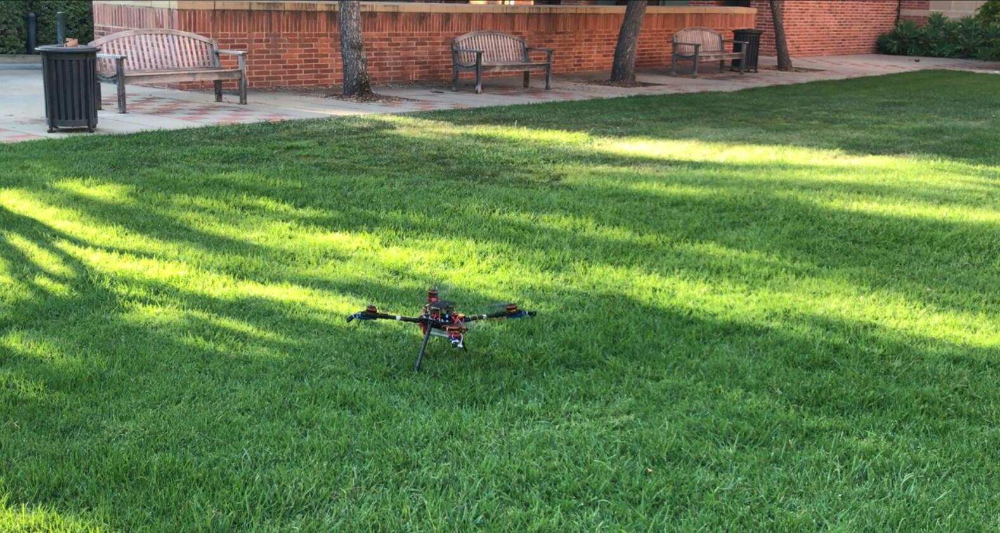

Sort by year:
A Reinforcement Learning Approach for Locomotion
Team Members: CUI WANDI(wandicui@ucla.edu) ZHANG ZEYU(zeyu.zhang@cs.ucla.edu) ZHANG YUNCHU (yunchuzhang@ucla.edu) YANG ZIQI(larittic@ucla.edu)
UCLA Details: http://tinyurl.com/275project
- This project is the term project for UCLA CS275 18Winter. We explored the Reinforcement Learning approach for locomotion training. We implemented the Evolution Strategy and A3C algorithm on the BipedalWalker-v2 physical environment provided by OpenAI Gym. Both led to good results with satisfying accumulated rewards.
- Comparing the two solutions, we decided that A3C algorithm is stabler and more suited for this problem. Then we conducted further experiments on the advanced BipedalWalkerHardcore-v2 environment that has randomly generated terrain obstacles, which achieved relatively modest performance. We also explored deeper into the underlying explanation for the experiment results.

July 2018 — Mar 2019
Intelligent Aerial manipulator HCI system: Using arm-drone to collaborate with human
Research team leader Advisor: Xiang Anthony Chen, Assistant Professor, Department of Electrical and Computer Engineering, University of California, Los Angeles.
Research team leader Advisor: Xiang Anthony Chen, Assistant Professor, Department of Electrical and Computer Engineering, University of California, Los Angeles.
- Based on robot-arm and drone to build aerial manipulator system and make it stable with impedance control and motion planning algorithms in ROS.
- Utilize deep neural network to train an offline grasps network and train online grasps network with reinforcement learning.
- Utilize online-offline machine learning algorithm to build autonomous updated model.
- Fused multi-information from human demonstration and online-offline model’s previous knowledge.
- Interaction with human in new task with demonstration to update whole model.
- Freescale Smartcar Competition Regional Second Prize Sep.2014 — June 2015
- Wrote the algorithms for different stages to identify the racing track, based on PID algorithm to control speed.
- Was responsible for hardware building, PCB design, welding and debugging.Equipped the smart car with sensors such as accelerometer to avoid obstacles and pass over the ramp.
- Electronic Design Competition (Research on blind pendulum) DUTNationwide Second Prize July 2015 — Aug.2015
- Research on blind pendulum, building model, and spatial 3-D analysis.
- Built a model of nonlinear dispersion, composition and resolution of motion, and automatic control principle.
- Collected the attitude of wind pendulum, processed the data with SCM, and regulated wind force by position from PID closed-loop.
- Made the wind pendulum swing up, perform setting-out and stay still under the control of DC blower.
Apr.2018 — June 2018 Control for Robotics system: Solving Rubik’s Cube with robot arm and motor
Team leader Advisor: Veronica Santos, Associate Professor, Department of Mechanical Engineering , Director of Biomechatronics Lab in UCLA
Team leader Advisor: Veronica Santos, Associate Professor, Department of Mechanical Engineering , Director of Biomechatronics Lab in UCLA
- Based on web-camera to detect randomly shuffled Rubik’s cube and sent motion command’s solution to robot arm.
- Utilize inverse kinematic to make trajectory and position planning for robot arm.
- Utilized PID position control to rotate Rubik’s Cube and realized real-timeGripper’s force control to grasp Rubik’s Cube.
June 2018 — Sept.2018 Robotics research Intern at DMAI Graduate Researcher
Advisor: Yixin Zhu , Research Director and VP, DMAI
Advisor: Yixin Zhu , Research Director and VP, DMAI
- Build red-ball tracking system with several motors, 3D-printed links, Raspberry Pi and Pi camera.
- Solved Inverse kinematic problem for humanoid robot’s neck with Moveit in ROS and achieve real-time control.
- Utilized Zeromq to communicate with CV group to attain object’s dynamic information.
- Based on Monocular-ORB-Slam algorithm to scan current environment and build map for robots.
Image based Object Detection System for Self-driving Cars Application
Advisor: Shi Ruan , Deep learning and computer vision Researcher, Facebook
Advisor: Shi Ruan , Deep learning and computer vision Researcher, Facebook
- Base on Deep learning (Mxnet) to implement object detection and tracking system on self-driving car system.
- Utilize Yolo algorithm to construct special neural network model(utilize Resnet to extract basic image information and then with new designed network frame) update a new loss function, train the network on GPU and tune parameters to converge and optimize the result.
- Optimize feedforward inference network and realize object detection and tracking in real time on Raspberry with its Pi camera.

{kind=link}
- Use hand to knock off the table tennis with DARWIN-Mini
- Utilize inverse kinematic to solve desired motion including Kneel Down,Knock,Stand up and Celebration